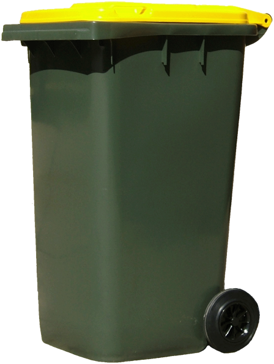

Bins
There are two different bins for recycle:
| Color | Desc |
|---|---|
|  | Yellow lidded bins:Mixed Recycle |
| Red lidded bins:Waste |
You will need to put the bins outside on your given day.The day may vay depending on the area you are living.For more details please visit the main site which is refrenced at the bottom of the website.